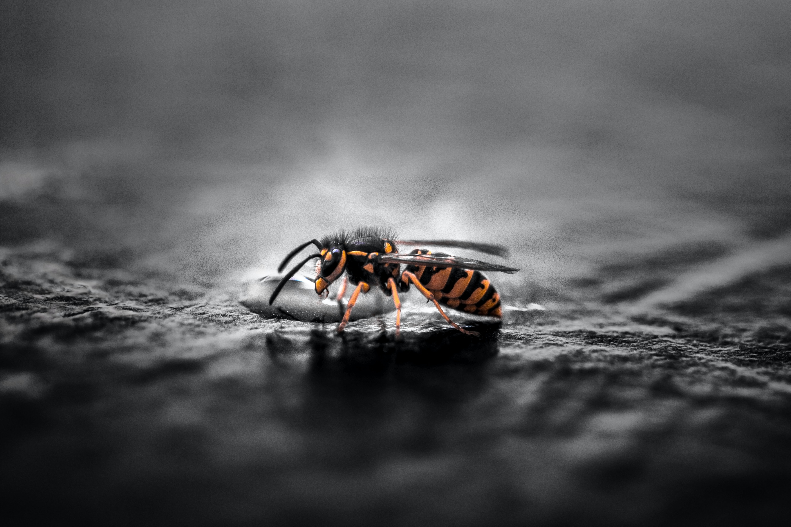
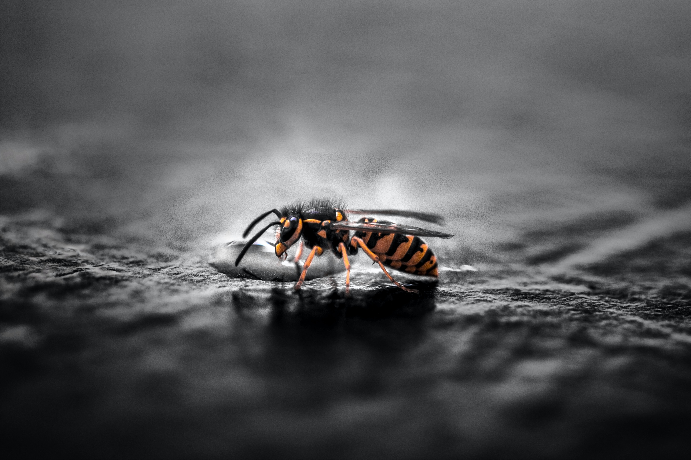
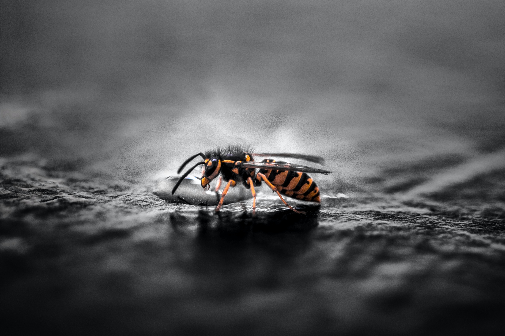

Che tipo di fotografia mi piace:
- Street photography
- Notturna
- Macro
- Paesaggistica
"Non fotografare le cose come appaiono.
Fotografale come le senti."
Cit. David Alan Harvey
La fotografia è l’immagine di un oggetto fissata, mediante proiezione ottica, su di un supporto (analogico o digitale) sensibile alla luce. La parola fotografia deriva da due parole greche: foto (phos) e grafia (graphis). Fotografia significa quindi letteralmente scrittura (grafia) con la luce (fotos). Disegnare con la luce.
Ma la fotografia è molto di più: è arte, documento, informazione,denuncia, passione e pensiero; un mondo dove realtà e finzione, emozione e studio, spirito e materia si mescolano e si fondono. La fotografia è la fusione di due attimi, indissolubili e distanti tra di loro. Da una parte il soggetto ritratto, dall’altra lo stato d’animo del fotografo. Il loro incontro fa nascere una possibile visione della realtà.

| STILE FOTO |
TIPO OBIETTIVO |
DETTAGLI | LINK UTILI |
|---|---|---|---|
| Paesaggi | OBIETTIVO 12-32mm PANASONIC | Obiettivo zoom standard intercambiabile digitale LUMIX G VARIO 12-32mm / F3.5-F5.6 ASPH. / MEGA O.I.S. / Attacco Micro 4/3 | Acquista |
| Macro | OBIETTIVO 30mm PANASONIC | Obiettivo Lumix Macro 30mm, F 2,8 ASPH; stabilizzatore ottico d'immagine MEGA O.I.S - è progettato per scatti macro a grandezza naturale, come primi piani di insetti, cibo o fiori, nonché per un migliore ritratto. | Acquista |
| Notturna | OBIETTIVO 7-14mm OLYMPUS | M.ZUIKO DIGITAL ED 7-14mm - Obiettivo per Micro 4/3, M.Zuiko Digital ED 7-14mm 1:2.8 PRO. Diaframma massimo 1:2.8, diaframma minimo 1:22. Autofocus ad alta velocità, resistente alla polvere, agli spruzzi d'acqua e al gelo, per un utilizzo professionale, rivestimento ZERO per riflessi ridotti al minimo. | Acquista |
| Street Photography |
OBIETTIVO 15mm PANASONIC | Obiettivo per Micro 4/3, 15 mm a lunghezza focale singola - Panasonic H-X015E-K LEICA DG SUMMILUX - Lenti 15 mm F1,7 ASPH | Acquista |
*per ulteriori info su altri accessori clicca qui
Altri accessori utili per cominciare, su questa pagina web: